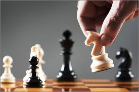
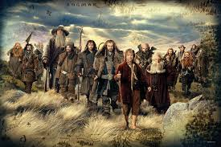
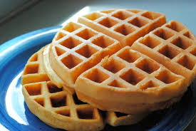
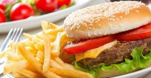
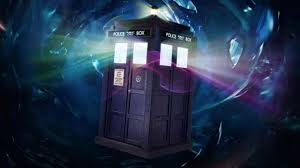

10 Things I Love
-

Files and folders
When I started playing a game I thought it was all about the game, then I realized I could mess things up and change and edit things, ever since then I have loved editing files and folders.
-
Choir
I have been singing ever since I was born. When I was nine I joined the UCC a fter lots of encouragement. Today I am currently in the off season of choir but hope to be back soon. Because of choir I love singing even more. :)
-

Chess
I like playing chess. I first started play chess with my dad. It was one of those cheep sets so we wouldn't lose any money. The strategy that is required in that game always makes me think and I love it when I think. Today I play with my friend peter. (Oh big surprise he sits by me :)
-

Hobbit
When I was only a wee lad my father read to me the hobbit. He would sit on the couch and read to me while I would fall asleep. I vaguely remember parts of the things he read to me, but now I have new ideas of how everything looked. I also love reading the Lord of the Rings.
-
Scout
When I was in cub scouts my mom was my leader and I really didn't enjoy it. When I turned eleven I went to elven year old scouts. I earned lots of merit badges. Now I am in boy scouts and I enjoy it a whole lot more. I have earned less merit badges, but have more fun than I did at cub scouts.
-

Waffles
Ever since last year I have been obseesed with Waffles. I don't know why but it just keeps popping up in my head. I do really like waffles though. Oddly enough I don't like syrup, I also don't like pancakes but I do like waffles. Just plane old waffles with some sugar.
-

Hamburgers
When I was small I hated burgers. We would walk to mcdonalds and I would order chicken nuggets. Now I can't stand to even see chicken nuggets, but my mouth waters when I think about burgers.
-

Doctor Who
I first started liking sci-fi three years ago. My dad turned me on to Doctor Who and I really liked it. Today I am enjoying season 8 and hope to soon get season 9. My favorite doctor was Matt Smith because of how silly he was. His famous line was fish fingers and custard.
-
Comedy
Everyone has a sense of humor, but I like more mature humor. I don't like and don't laugh at jokes that kids my age make. I do however love it when I go to my grandparents house and hear a funny story. When I was little my dad played some of his music and every once in a while one of his composers would write comedy. I especially like Monty Python.
-
Math
I have always been good at math. I especially love doing it backwards. I currently am loving Matricees and systems of equations and hope that his will help me in the future. I am in advanced math and my friend is with me. We love programming and solving complex equations on the calculators. In my personal opinion I think that math is the best subject.